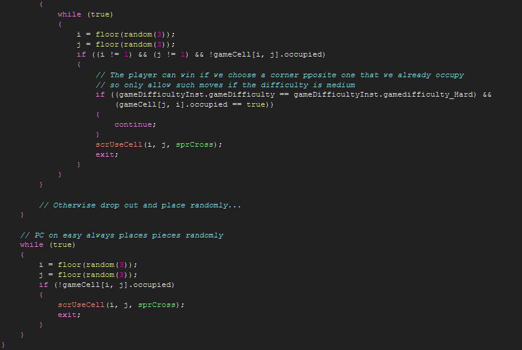

Tutorial
Page 7 of 7
Scripts : AI
In this section we will be detailing the operation of scrUpdateAI and how the computer decides where to
place its pieces in response to the player depending on the AI difficulty chosen.
We'll start out by defining the actions of the best AI player possible, which is the hard setting for the AI. This
AI setting is very difficult to beat and may easily beat the player if they do not concentrate.
In plain English, the decision making the AI undergoes when deciding where to place a piece are as follows:
If it is possible for the computer to win with this move then use the winning location
If the human opponent can win with the next move then block them
If the central location of the grid is available then use it
Choose a corner location if one is available. If we've already placed a piece in corner then the corner chosen should not
be opposite the previous corner cell used.
Choose a random location from the remaining cells.
To differentiate between hard and medium we alter step 4 and allow the opponent on medium setting to sometimes choose a corner
opposite. The medium class opponent is still quite tough to beat, so it is an open problem for the reader to find other ways
to "dumb down" the opponent in a "realistic" fashion.
On the easiest setting the computer opponent simply always chooses a random location. You may find yourself surprised how
reasonably the easy opponent often seems to play despite a completely haphazard selection, though an obvious tweak would be
to enable even the easy opponent to check for a winning move and to select it. This is partly down to the limited
number of slots available to place randomly in and with a much larger board the obvious lack of intelligence being shown
would be readily apparent.
The code for the AI placement selection looks like this:

You will notice that the code makes use of our final script for the game, which is scrTestCellForResult. This code is used
both to check for a winning move and a blocking move and is a good example of the Don't Repeat Yourself principle of coding (DRY).
The code for both checks is functionally the same, the only difference is the type of piece we're checking for. Thus we pass
the location of the cell we're checking as well as the type of sprite (the player or the AI's piece) into the final script and
read this out as argument0, argument1 and argument2. A script can receive between 0 and 16 different arguments, though there is often
good reason to be concerned about the complexity of your code if the number of arguments being passed to a routine is in excess of 10.
The code for checking whether or not a winning move can be made by placing a piece at a given location looks as follows:
This concludes the Tic-Tac-Toe tutorial. We hope you found it a useful introduction to the power of GameMaker's scripting
language.